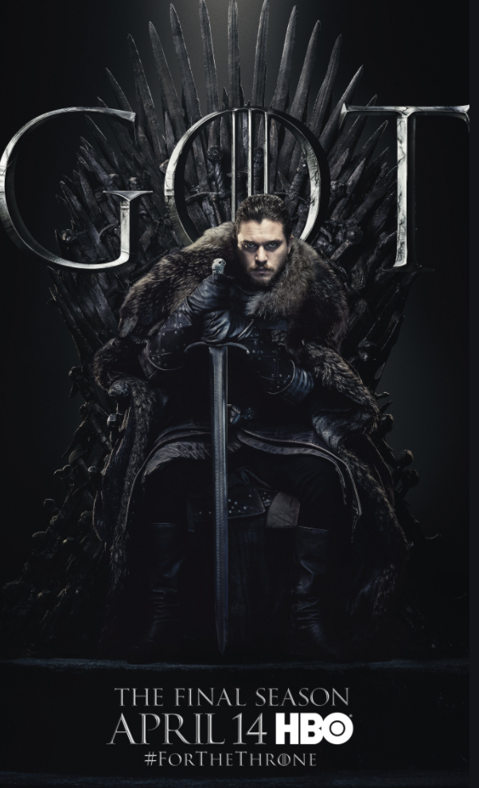
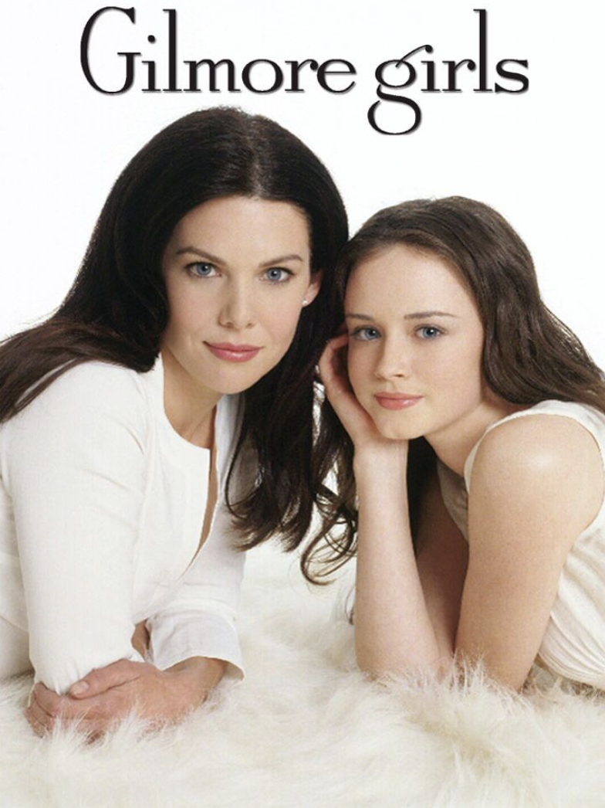
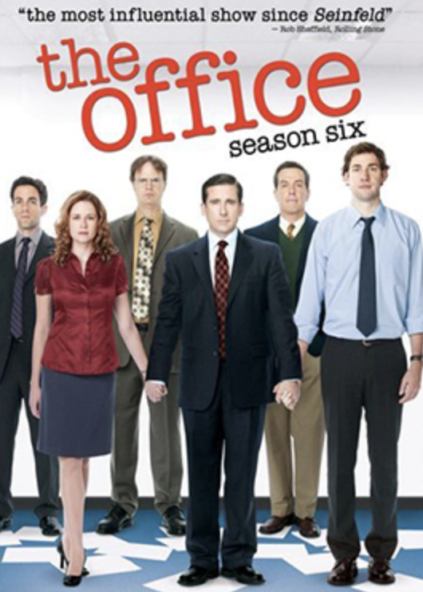

Binging Television
Fun fact: I was binging television before it was cool. In my house growing up, we had Directv with the fancy DVR function when it first came out, where it would give you the option to record a show every single time it would come on. I soon learned that even when shows are played with reruns on channels, they are often played in order. I would save some shows until I had a ton of them saved onto our TV, and then sit for hours and watch them all. This is how I watched The Big Bang Theory, and That 70's Show. However, I had seen The Office clips on Tumblr, and thought that I would find the show funny. When I was little, we had Netflix where they would send you an envelope with the DVD inside it, but now I was a grown sophomore in high school with a debit card. I got myself a Netflix account, and was immediately hooked. I can't even tell you how many entire series I've seen at this point.
If I had to name my favorite show, I would have to say Game of Thrones, even though it is not a Netflix show. I really think that every episode on that show is produced like a movie, and the attention to detail in all of the sets is really unreal. It was also one of the only shows ever that I haven't guessed what was going to happen at multiple points of the show. However, rewatching the sixth season, there is some major foreshadowing. Also the series ending was absolute trash but we don't have to get into that. Some of my other shows are The Office, Gilmore Girls, and there was a limited series on Hulu called Normal People, based off of Sally Rooney's novel, but the show actually did the book justice. I was shocked.
  